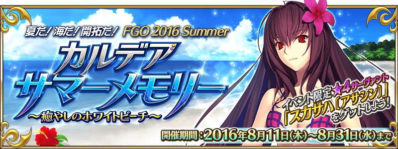
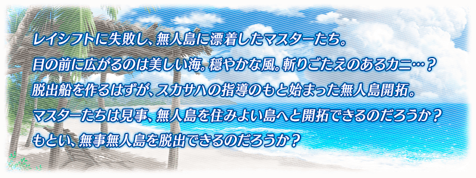
◆活動舉辦期間◆
2016年8月11日(四) 18:00～8月31日(三) 12:59
◆活動概要◆
舉辦期間限定活動「夏日！ 大海！ 開拓！ FGO 2016 Summer 迦勒底夏日回憶 ～療癒白沙灘～」！
收集活動道具實行開拓關卡，開拓無人島吧。
推進選擇式的開拓關卡來製作專屬自己的島嶼。
本活動為二部構成。
通過第一部主線關卡的話「★4(SR)斯卡哈〔Assassin〕」以期間限定加入。
第二部預定自8月22日(一)開始。
要參加第二部條件為通過第一部的主線關卡。
在第二部新地圖，新的活動道具登場！
通過第二部主線關卡的話「★4(SR)斯卡哈〔Assassin〕」正式加入。
將第一部、第二部一起通過，將斯卡哈〔Assassin〕的正式加入做為目標吧！
◆活動參加條件◆
只有通過「特異點F 炎上汙染都市 冬木」的Master才能參加
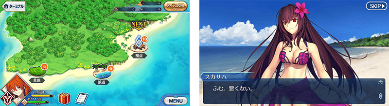
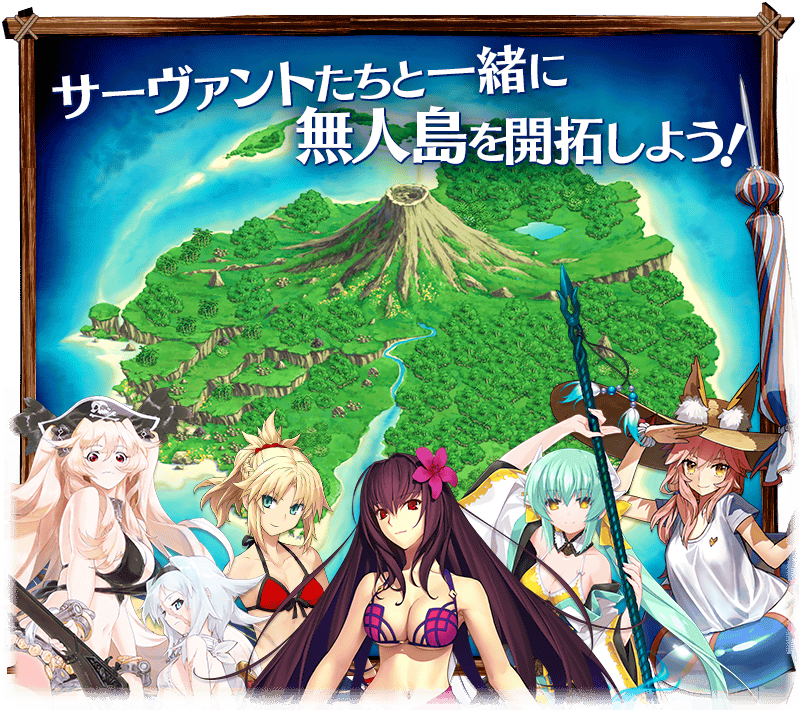
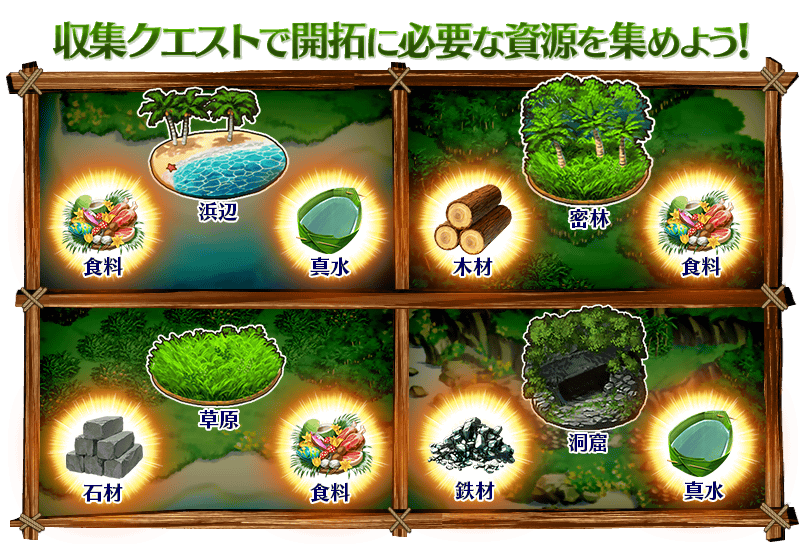
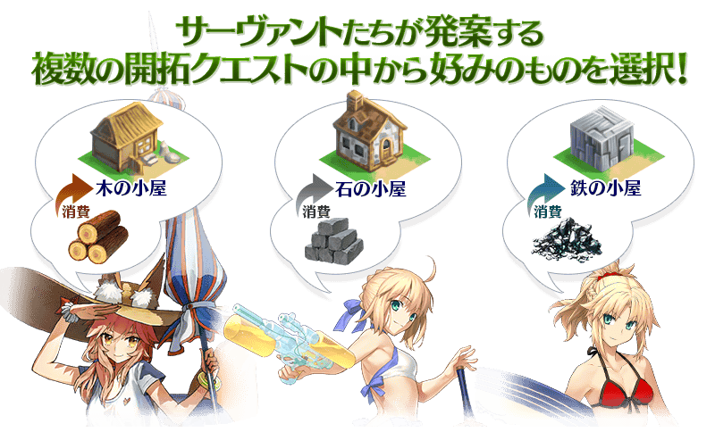
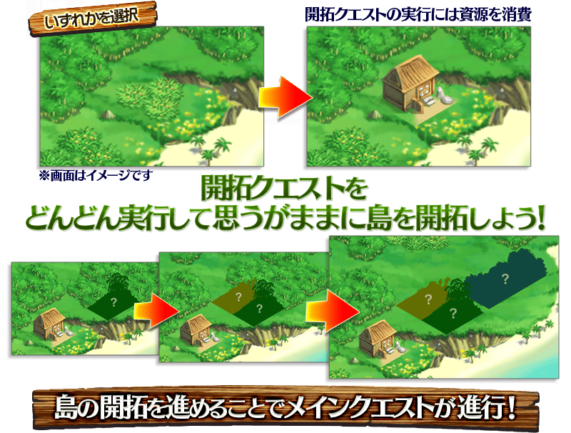
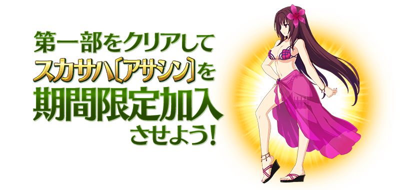
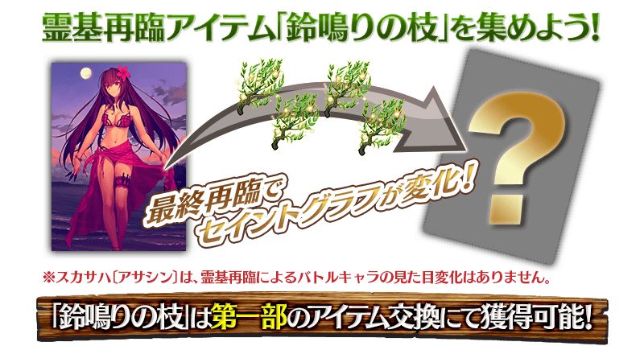
推進主線關卡會發生開拓關卡。
開拓關卡同時會開放３種類，只能選擇其中１種實行。
在開拓關卡的實行會消費資源(活動道具)。
活動道具可以靠挑戰收集關卡獲得可能。
※實行１種開拓關卡的話，沒選到的剩餘２種開拓關卡會消失。
實行在通過第一部後出現的開拓重置關卡的話，
可以重新選擇沒選到的開拓關卡。
通過一定數開拓關卡的話會開放主線關卡。
藉著主線關卡的進行發生新的開拓關卡及收集關卡。
反覆地「收集」「開拓」，推進主線關卡吧！
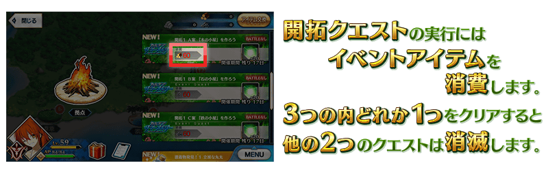
◆輝煌・夏日關卡◆
能與活動限定Servant們體驗特別故事的關卡。
透過主線關卡的進行來開放。
另外，可以獲得呼符做為通過報酬。
| 關卡名 | 關卡通過報酬 |
|---|---|
| 輝煌・夏日 ～與玉藻出遊～ |
呼符×1 |
| 輝煌・夏日 ～與莫德雷德一起～ |
呼符×1 |
| 輝煌・夏日 ～與清姫約會～ |
呼符×1 |
| 輝煌・夏日 ～與安妮＆瑪莉探險～ |
呼符×1 |
◆發現漂流物！關卡◆
消費AP挑戰關卡的話，可以獲得更多活動道具的關卡。
推進一定以上主線關卡後開放，依照經過天數追加。
開放的關卡在活動期間中，無論何時都能挑戰。
※通過關卡後消失。
◆開拓重置關卡◆
通過第一部主線關卡的話，會出現開拓重置關卡。
實行開拓重置關卡能重新開始島嶼的開拓。
藉著利用開拓重置關卡，遊玩錯過的故事，獲得之前沒辦法獲得的關卡通過報酬，再次享受島嶼的開拓。
※進行重置後開拓消費的活動道具不會歸還。
◆超值攻略方法・其1◆
賦予全部Servant活動道具獲得量提升的加成！
例如阿爾托莉亞・潘德拉剛(Saber)是食料的獲得量提升等，會根據Servant變動獲得數提升的活動道具。
關於Servant各自獲得量提升的活動道具，可以在關卡開始時的編成畫面與Servant詳細確認。
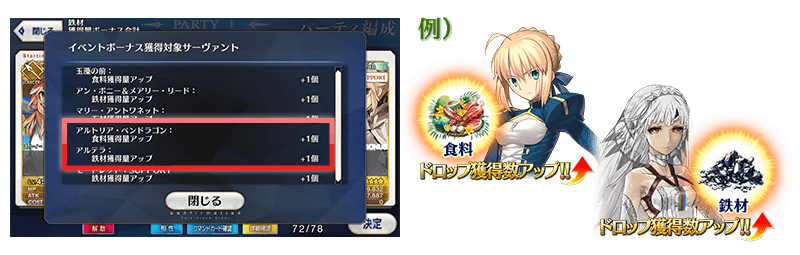
- ■鉄材獲得數提升的Servant
-
職階 稀有度 名稱 Saber ★★★★★ 阿提拉 Saber ★★★★★ 莫德雷德 Archer ★★★★★ 阿周那 Archer ★★★★★ 尼古拉・特斯拉 Lancer ★★★★★ 布倫希爾德 Lancer ★★★★★ 阿爾托莉亞・潘德拉剛 Rider ★★★★★ 女王梅芙 Assassin ★★★★★ 謎之女主角X Caster ★★★★★ 李奧納多・達文西 Berserker ★★★★★ 弗拉德三世 Ruler ★★★★★ 天草四郎 Avenger ★★★★★ 巖窟王 愛德蒙・唐泰斯 Saber ★★★★ 齊格飛 Archer ★★★★ Emiya Archer ★★★★ 織田信長 Archer ★★★★ 安妮・伯妮＆瑪莉・瑞德 Lancer ★★★★ 阿爾托莉亞・潘德拉剛〔Alter〕 Rider ★★★★ 安妮・伯妮＆瑪莉・瑞德 Rider ★★★★ 莫德雷德 Caster ★★★★ 湯瑪斯・愛迪生 Berserker ★★★★ 蘭斯洛特 Berserker ★★★★ 弗蘭肯斯坦 Caster ★★★ 馮・霍恩海姆・帕拉塞爾斯 Caster ★★★ 查爾斯・巴貝奇 Rider ★★ 愛德華・蒂奇 Berserker ★★ 血斧・埃里克 Berserker ★ 斯巴達克斯 - ■石材獲得數提升的Servant
-
職階 稀有度 名稱 Saber ★★★★★ 尼祿・克勞狄烏斯〔Bride〕 Archer ★★★★★ 吉爾伽美什 Archer ★★★★★ 俄里翁 Lancer ★★★★★ 迦爾納 Rider ★★★★★ 伊斯坎達爾 Rider ★★★★★ 奧茲曼迪亞斯 Saber ★★★★ 尼祿・克勞狄烏斯 Saber ★★★★ 蘭斯洛特 Rider ★★★★ 瑪莉・安東尼 Assassin ★★★★ 絲西娜 Caster ★★★★ 尼托克里絲 Caster ★★★★ 瑪莉・安東尼 Berserker ★★★★ 海克力斯 Saber ★★★ 蓋烏斯・尤利烏斯・凱撒 Saber ★★★ 弗格斯・馬克・羅伊 Saber ★★★ 貝德維爾 Archer ★★★ 尤瑞艾莉 Archer ★★★ 大衛 Archer ★★★ 子吉爾 Assassin ★★★ 亨利・傑基爾＆海德 Caster ★★★ 美狄亞 Berserker ★★★ 大流士三世 Berserker ★★★ 呂布奉先 Lancer ★★ 雷奧尼達一世 Rider ★★ 聖喬治 Assassin ★★ 咒腕的哈桑 Assassin ★★ 歌劇魅影 Berserker ★★ 卡利古拉 - ■木材獲得數提升的Servant
-
職階 稀有度 名稱 Berserker ★★★★★ 坂田金時 Berserker ★★★★★ 庫・夫林〔Alter〕 Berserker ★★★★★ 源頼光 Saber ★★★★ 羅摩 Saber ★★★★ 高文 Archer ★★★★ 崔斯坦 Lancer ★★★★ 神槍 李書文 Lancer ★★★★ 清姬 Rider ★★★★ 阿爾托莉亞・潘德拉剛〔聖誕Alter〕 Rider ★★★★ 坂田金時 Berserker ★★★★ 茨木童子 Berserker ★★★★ 貝奧武夫 Lancer ★★★ 庫・夫林 Lancer ★★★ 庫・夫林〔Prototype〕 Lancer ★★★ 迪爾姆德・奧德利暗 Lancer ★★★ 羅慕路斯 Lancer ★★★ 赫克特 Rider ★★★ 牛若丸 Rider ★★★ 美杜莎 Caster ★★★ 梅菲斯托費勒斯 Caster ★★★ 吉爾・德・雷 Caster ★★★ 傑羅尼莫 Berserker ★★★ 清姬 Lancer ★★ 武藏坊弁慶 Assassin ★★ 夏爾＝亨利・桑松 Archer ★ 阿拉什 - ■真水獲得數提升的Servant
-
職階 稀有度 名稱 Saber ★★★★★ 沖田總司 Saber ★★★★★ 兩儀式 Assassin ★★★★★ 開膛手傑克 Assassin ★★★★★ 酒呑童子 Caster ★★★★★ 諸葛孔明〔埃爾梅羅II世〕 Berserker ★★★★★ 南丁格爾 Ruler ★★★★★ 貞德 Avenger ★★★★★ 貞德〔Alter〕 Saber ★★★★ 阿爾托莉亞・潘德拉剛〔Lily〕 Saber ★★★★ 夏爾・德翁 Archer ★★★★ 阿塔蘭塔 Lancer ★★★★ 芬恩・麥克庫爾 Rider ★★★★ 瑪爾大 Assassin ★★★★ Emiya〔Assassin〕 Assassin ★★★★ 兩儀式 Caster ★★★★ 美狄亞〔Lily〕 Ruler ★★★★ 瑪爾大 Archer ★★★ 比利小子 Rider ★★★ 布狄卡 Assassin ★★★ 百貌的哈桑 Assassin ★★★ 靜謐的哈桑 シールダー ★★★ 瑪琇・基利艾拉特 Caster ★★ 漢斯・克里斯蒂安・安徒生 Assassin ★ 瑪塔・哈里 Caster ★ 沃夫岡・阿瑪迪斯・莫札特 - ■食料獲得數提升的Servant
-
職階 稀有度 名稱 Saber ★★★★★ 阿爾托莉亞・潘德拉剛 Archer ★★★★★ 阿爾托莉亞・潘德拉剛 Lancer ★★★★★ 斯卡哈 Lancer ★★★★★ 玉藻前 Rider ★★★★★ 弗朗西斯・德雷克 Caster ★★★★★ 玉藻前 Caster ★★★★★ 玄奘三藏 Saber ★★★★ 阿爾托莉亞・潘德拉剛〔Alter〕 Lancer ★★★★ 伊莉莎白・巴托里 Rider ★★★★ 阿斯托爾福 Assassin ★★★★ 卡米拉 Assassin ★★★★ 斯卡哈 Caster ★★★★ 伊莉莎白・巴托里〔萬聖節〕 Caster ★★★★ 童謠 Caster ★★★★ 海倫娜・布拉瓦茨基 Caster ★★★★ 愛麗絲菲爾〔天之衣〕 Berserker ★★★★ 玉藻貓 Saber ★★★ 吉爾・德・雷 Archer ★★★ 羅賓漢 Archer ★★★ 俵藤太 Rider ★★★ 亞歷山大 Assassin ★★★ 荊軻 Assassin ★★★ 風魔小太郎 Caster ★★★ 庫・夫林 Caster ★★ 威廉・莎士比亞 Assassin ★ 佐佐木小次郎 Berserker ★ 阿斯忒里歐
※8/19(五)追記
◆超值攻略方法・其2◆
裝備能靠活動道具交換入手的活動限定概念禮裝「★5(SSR)サマータイム・ミストレス」的話，真水與食料的掉落獲得數提升。
◆超值攻略方法・其3◆
裝備期間限定概念禮裝的話，活動道具「鉄材」「石材」「木材」各自的獲得數提升。
※期間限定概念禮裝也會追加在第二部開始時第二部専用的活動道具掉落獲得數增加效果。
※請注意在各關卡的道具掉落率並非100%。
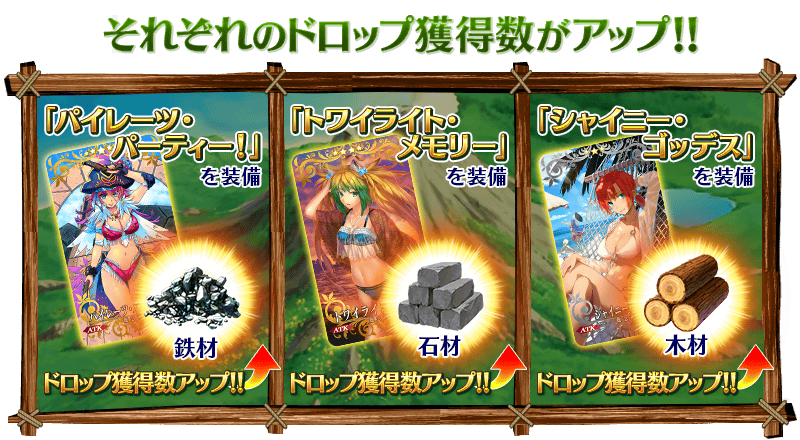
| 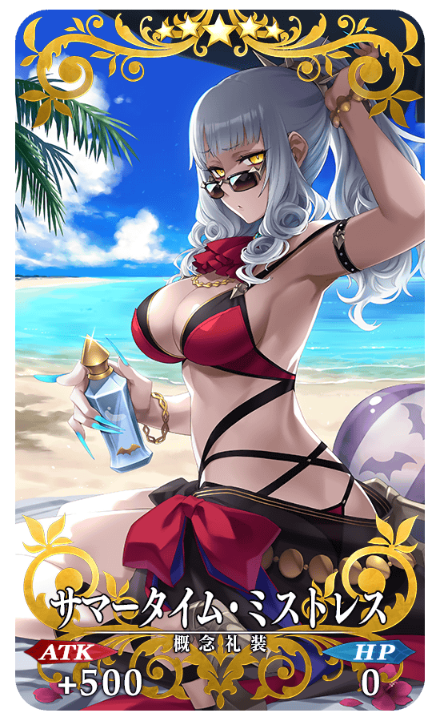 |
★★★★★SSR |
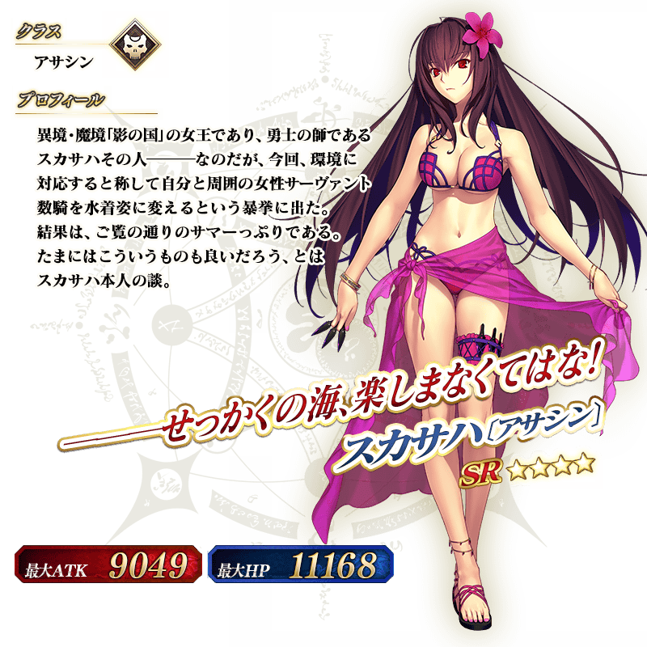
※斯卡哈〔Assassin〕在第一部通過後期間限定加入，第二部通過後正式加入。
靈基再臨需要活動限定的専用靈基再臨道具「鈴鳴りの枝」。
寶具等級提升的詳情會在第二部相關的公告記載。
◆交換方法◆
交換期間：2016年8月11日(四) 18:00～9月7日(三) 12:59
※交換期間結束後｢鉄材｣｢石材｣｢木材｣｢食料｣｢真水｣消失。
從達文西工房内的「活動道具交換」，用活動道具來交換以下的道具。
◆能用鉄材交換的道具◆
| 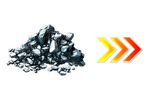 |
【活動限定概念禮裝】 【活動限定靈基再臨素材】 【技能強化素材、靈基再臨素材】 【靈基再臨素材】 【其他道具】 |
◆能用石材交換的道具◆
| 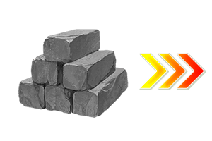 |
【活動限定概念禮裝】 【活動限定靈基再臨素材】 【技能強化素材、靈基再臨素材】 【靈基再臨素材】 【其他道具】 |
◆能用木材交換的道具◆
|
【活動限定概念禮裝】 【活動限定靈基再臨素材】 【技能強化素材、靈基再臨素材】 【靈基再臨素材】 【其他道具】 |
◆能用食料交換的道具◆
|
【活動限定概念禮裝】 【技能強化素材、靈基再臨素材】 【其他道具】 |
◆能用真水交換的道具◆
|
【活動限定靈基再臨素材】 【技能強化素材、靈基再臨素材】 【其他道具】 |
記念｢夏日！ 大海！ 開拓！ FGO 2016 Summer 迦勒底夏日回憶 ～療癒白沙灘～｣的舉辦，新魔術禮裝「ブリリアントサマー」登場！
推進第一部主線關卡的話，魔術禮裝獲得關卡在第一部地圖內以期間限定出現！
裝備新獲得的魔術禮裝的話，可以使用新的Master技能。
◆舉辦期間◆
2016年8月11日(四) 18:00～8月31日(三) 12:59
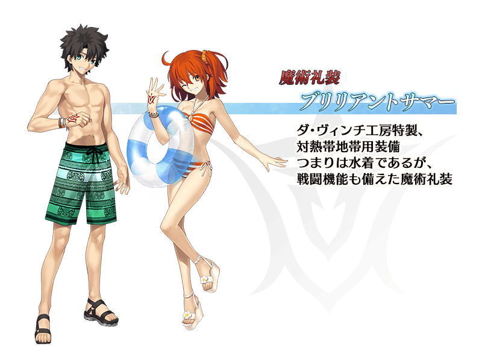
技能強化及靈基再臨素材追加新道具1種類！
此為活動期間限定Servant的技能強化及靈基再臨必要的道具。
主要可以從在活動關卡出現的敵人做為戰利品獲得。
另外，在這次活動關卡新登場的一部份敵人預定也會在今後追加的關卡登場。
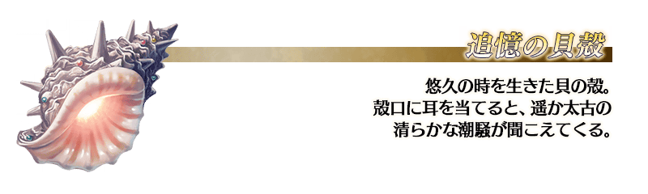
在Fate/Grand Order官方網站內的首頁及展覽室，公開「夏日！ 大海！ 開拓！ FGO 2016 Summer」的TVCM。敬請確認。
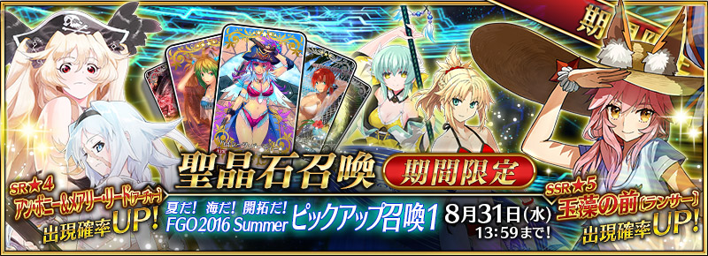
◆「夏日！ 大海！ 開拓！ FGO 2016 Summer Pick Up召喚１」期間◆
期間：2016年8月11日(四) 18:00～8月31日(三) 12:59
以期間限定舉辦「夏日！ 大海！ 開拓！ FGO 2016 Summer Pick Up召喚１」！
說到夏日活動，身穿適合夏日服裝的Servant「★5(SSR)玉藻前〔Lancer〕」「★4(SR)安妮・伯妮＆瑪莉・瑞德〔Archer〕」「★4(SR)莫德雷德〔Rider〕」「★4(SR)清姬〔Lancer〕」以期間限定登場！
詳情請在聖晶石召喚畫面左下的召喚詳細確認。
※玉藻前〔Lancer〕、安妮・伯妮＆瑪莉・瑞德〔Archer〕、莫德雷德〔Rider〕、清姬〔Lancer〕在Pick Up召喚期間結束後，不會追加到故事召喚。
裝備期間限定概念禮裝「★5(SSR)パイレーツ・パーティー！」「★4(SR)トワイライト・メモリー」「★3(R)シャイニー・ゴッデス」的話，活動道具的掉落獲得數會提升。
※能在「夏日！ 大海！ 開拓！ FGO 2016 Summer Pick Up召喚１」獲得的期間限定概念禮裝預定於第二部開始後，賦予對應第二部活動道具的效果。
詳情會在第二部相關的公告記載。
Pick Up 期間中，期間限定Servant、期間限定概念禮裝的出現機率提升！
10次召喚中★4(SR)以上1張確定和★3(R)以上的Servant1位確定！
※★4(SR)以上確定包含Servant和概念禮裝。
※所謂「出現機率UP」意指比同稀有度的Servant及概念禮裝出現機率更高的設定。
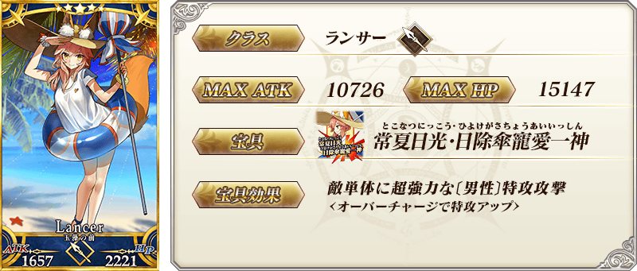

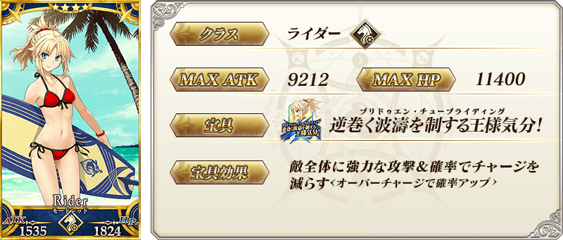
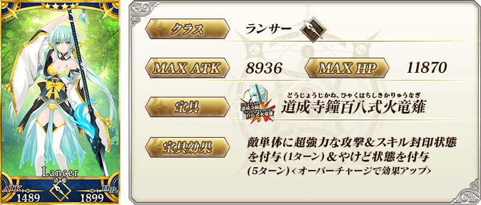

| 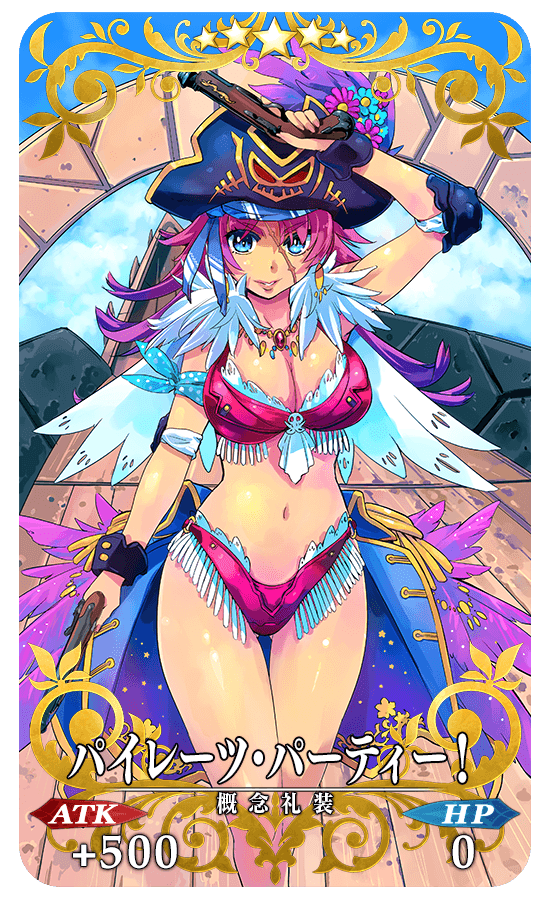 |
★★★★★SSR パイレーツ・パーティー！ ATK 500(最大：2000) HP 0 技能 對自身賦予無敵貫通狀態＆賦予每回合星星3個獲得狀態 ＋ 鉄材的掉落獲得數增加1個【『夏日！ 大海！ 開拓！ FGO 2016 Summer』活動期間限定】※在第二部開始時追加第二部活動道具的掉落獲得數增加效果。詳情會在第二部相關的公告記載。 |
| 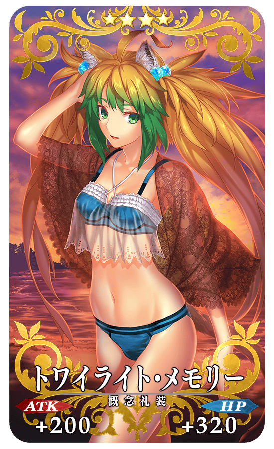 |
★★★★SR トワイライト・メモリー ATK 200(最大：750) HP 320(最大：1200) 技能 對自身賦予迴避狀態(1次)＆Quick卡性能提升8% ＋ 石材的掉落獲得數增加1個【『夏日！ 大海！ 開拓！ FGO 2016 Summer』活動期間限定】※在第二部開始時追加第二部活動道具的掉落獲得數增加效果。詳情會在第二部相關的公告記載。 |
| 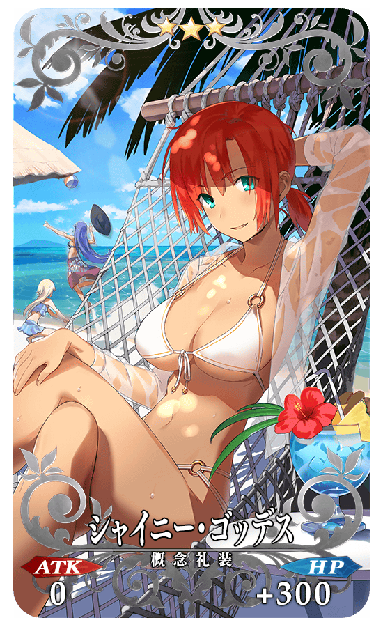 |
★★★R シャイニー・ゴッデス ATK 0 HP 300(最大：1500) 技能 自身的防禦力提升3%＆Arts卡性能提升3% ＋ 木材的掉落獲得數增加1個【『夏日！ 大海！ 開拓！ FGO 2016 Summer』活動期間限定】※在第二部開始時追加第二部活動道具的掉落獲得數增加效果。詳情會在第二部相關的公告記載。 |
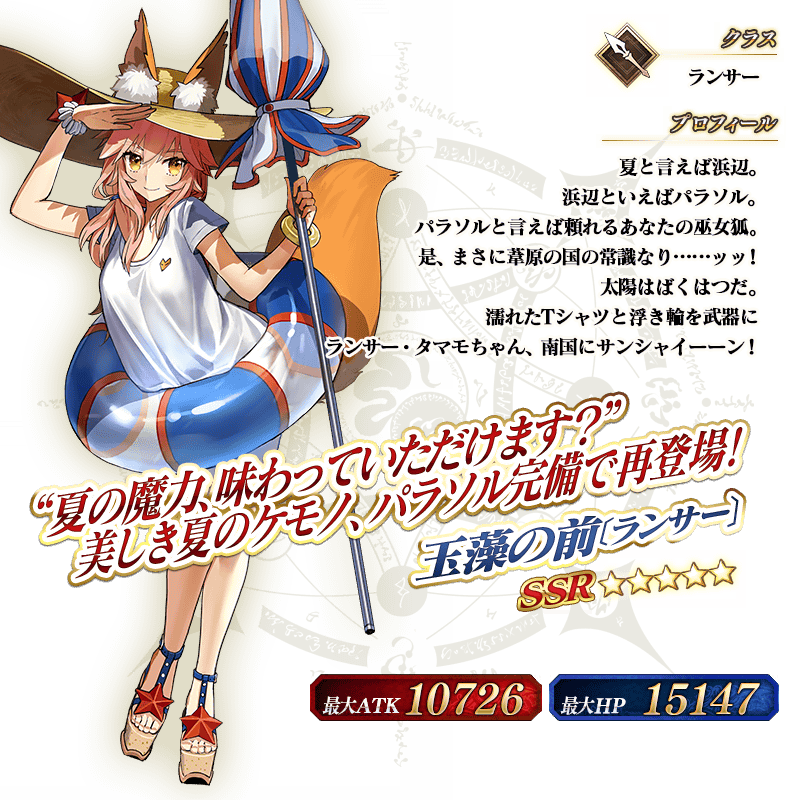
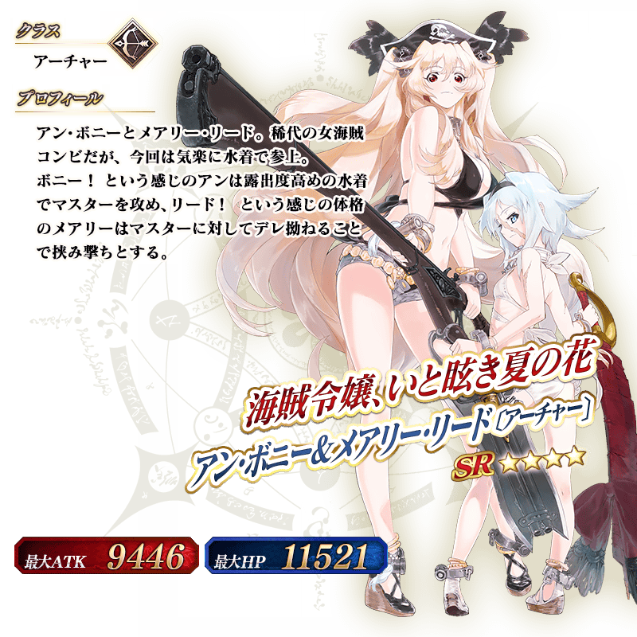
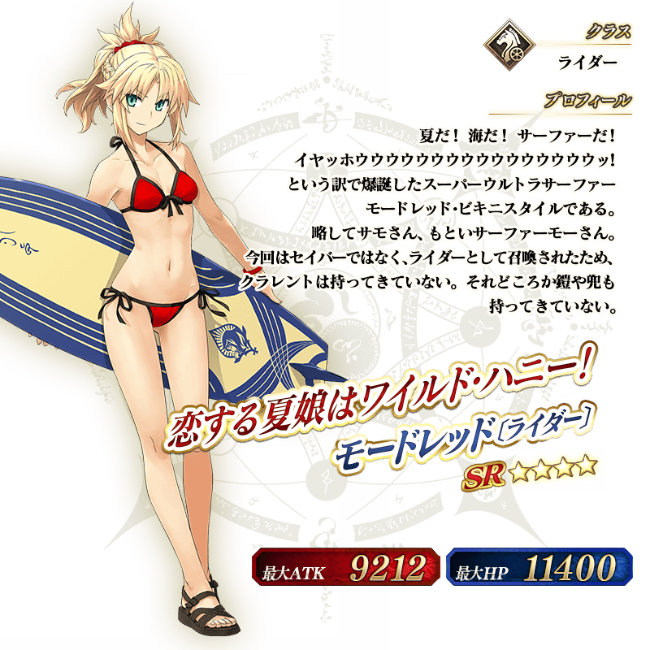
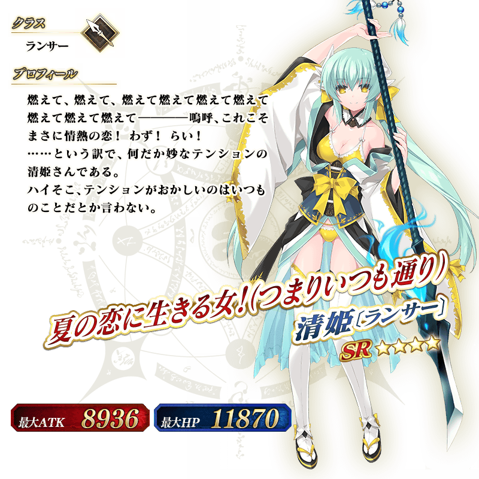